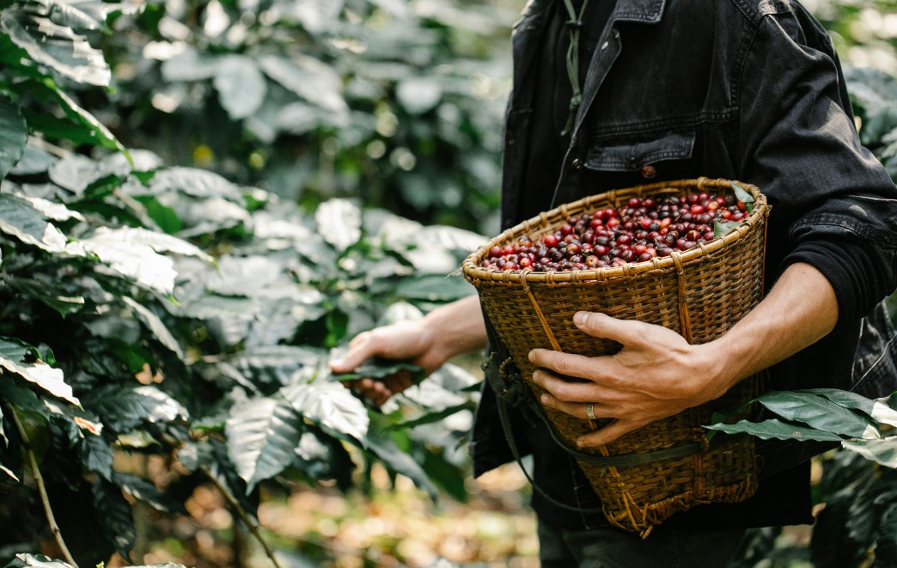

El corazón cafetero: Colombia y Bolivia
Hablar de café es hablar de América Latina. La región es el corazón palpitante de la producción mundial, un vasto mosaico de microclimas y tradiciones que dan vida a algunos de los granos más apreciados del planeta. Dentro de este universo, Colombia y Bolivia se erigen como dos destinos fascinantes que, aunque vecinos, ofrecen experiencias y perfiles de sabor radicalmente distintos. Acompáñanos en un viaje desde los paisajes exuberantes de Colombia hasta las alturas vertiginosas de Bolivia.
Colombia: El Eje Cafetero, Patrimonio de la Humanidad
Cuando el mundo piensa en café, a menudo piensa en Colombia. Su reputación no es casualidad; es el resultado de décadas de trabajo y de unas condiciones geográficas privilegiadas. El famoso "Eje Cafetero", una región que abarca los departamentos de Caldas, Risaralda y Quindío, fue declarado Paisaje Cultural Cafetero por la UNESCO. Sus laderas verdes y empinadas, salpicadas de palmeras de cera y coloridos pueblos como Salento o Filandia, son el escenario perfecto para un café excepcional.
El perfil clásico del café colombiano es conocido por su suavidad y equilibrio. Generalmente presenta una acidez media, un cuerpo balanceado y notas que recuerdan al chocolate, los frutos secos y los cítricos. Visitar una finca cafetera en esta región es una inmersión total en la cultura del café. Podrás caminar entre los cafetos, aprender sobre el meticuloso proceso de recolección manual y participar en una "catación" para educar tu paladar y apreciar las sutilezas de una taza de origen único.
Bolivia: El Tesoro Escondido de los Yungas
Si Colombia es un gigante consolidado, Bolivia es la joya emergente del café de especialidad. Su tesoro se encuentra en la región de los Yungas, una zona de valles escarpados y selva de altura donde la Cordillera de los Andes se encuentra con la cuenca del Amazonas. Aquí, pequeños productores, en su mayoría de comunidades indígenas, cultivan café a altitudes que superan los 1.700 metros sobre el nivel del mar.
Estas condiciones extremas, combinadas con variedades de café de alta calidad como la Geisha, Typica y Caturra, dan como resultado un grano de una complejidad organoléptica excepcional. El café boliviano de altura es célebre por su acidez brillante y sus perfiles de sabor delicados y exóticos, con notas florales como el jazmín y frutales como el durazno, la mandarina y la papaya. Probar un café de los Yungas es descubrir un perfil de sabor completamente nuevo, una valiosa y emocionante aportación al mercado de especialidad mundial.
Dos Países, un Continente de Sabor
Viajar por Colombia y Bolivia es comprender la increíble diversidad que América Latina tiene para ofrecer. Mientras Colombia te brinda la experiencia clásica y reconfortante de un café perfectamente equilibrado en un entorno de postal, Bolivia te sorprende con la elegancia y la complejidad de sus granos de altura. Ambos son testimonios del trabajo, la pasión y la riqueza de la tierra que convierten a este continente en el verdadero corazón del mundo cafetero.